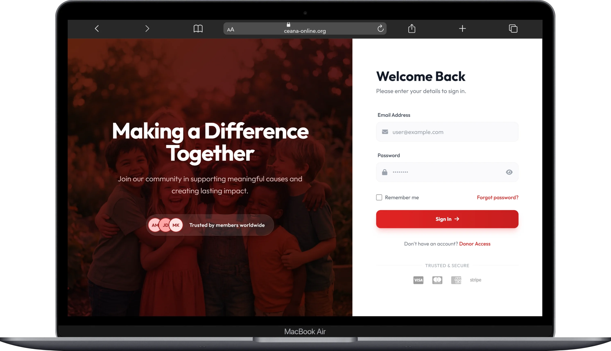
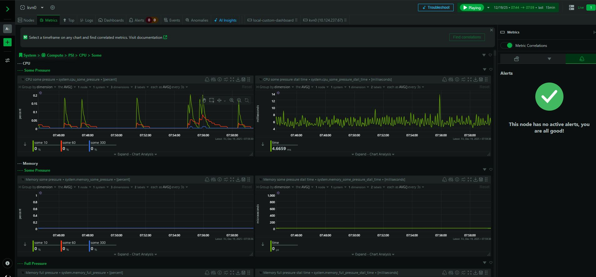
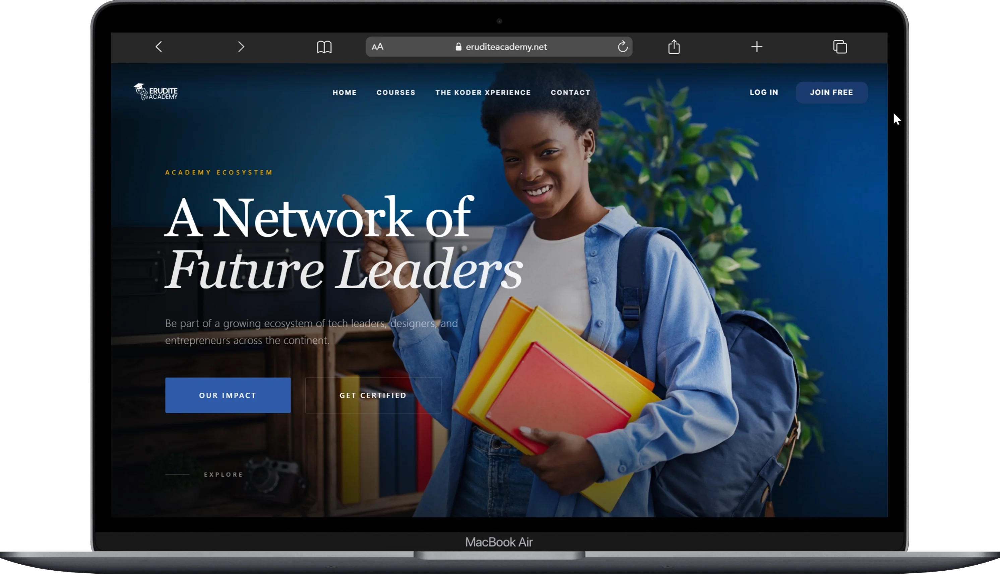
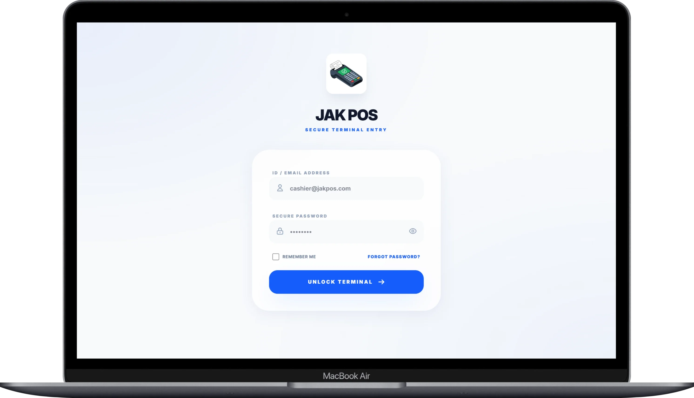
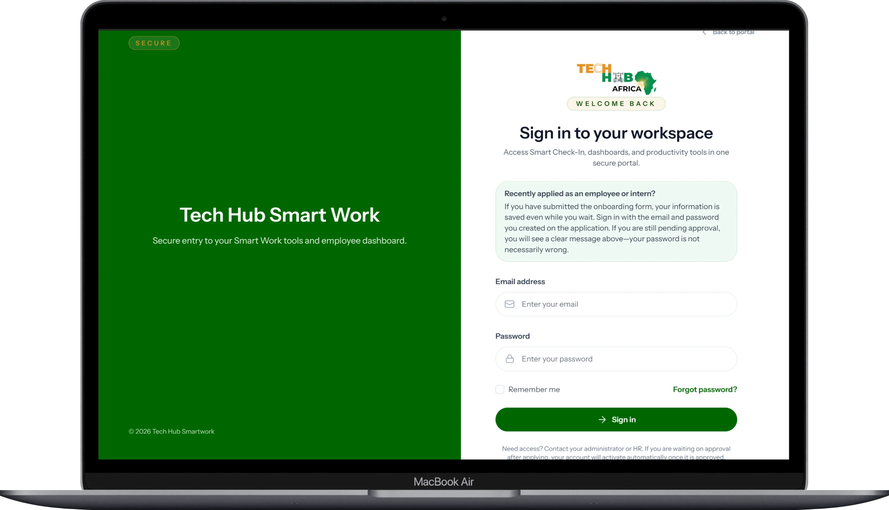
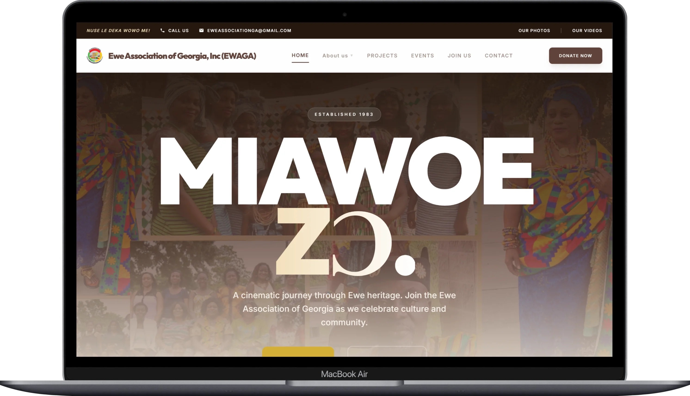
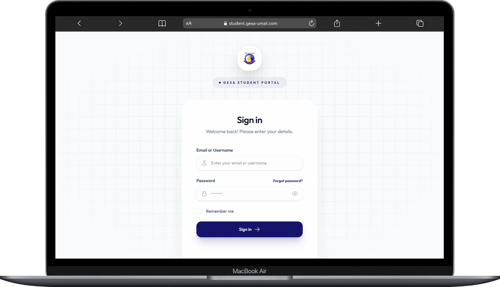
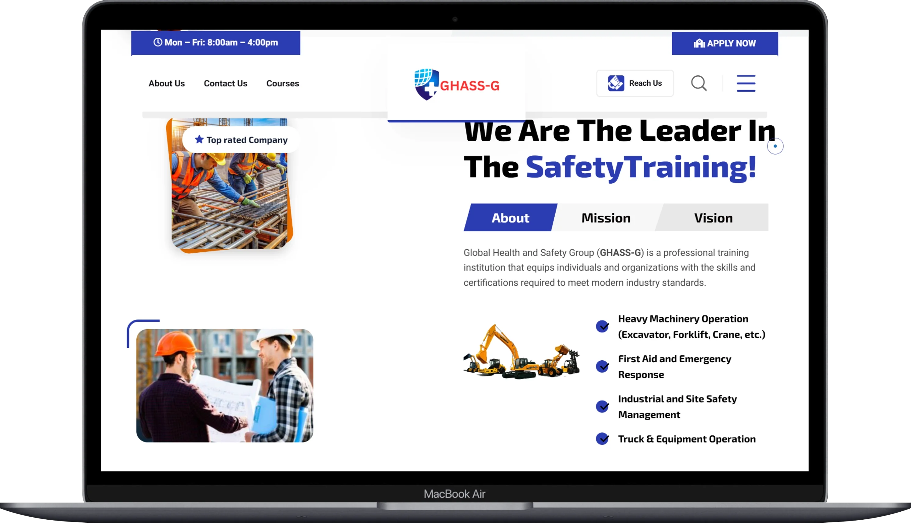
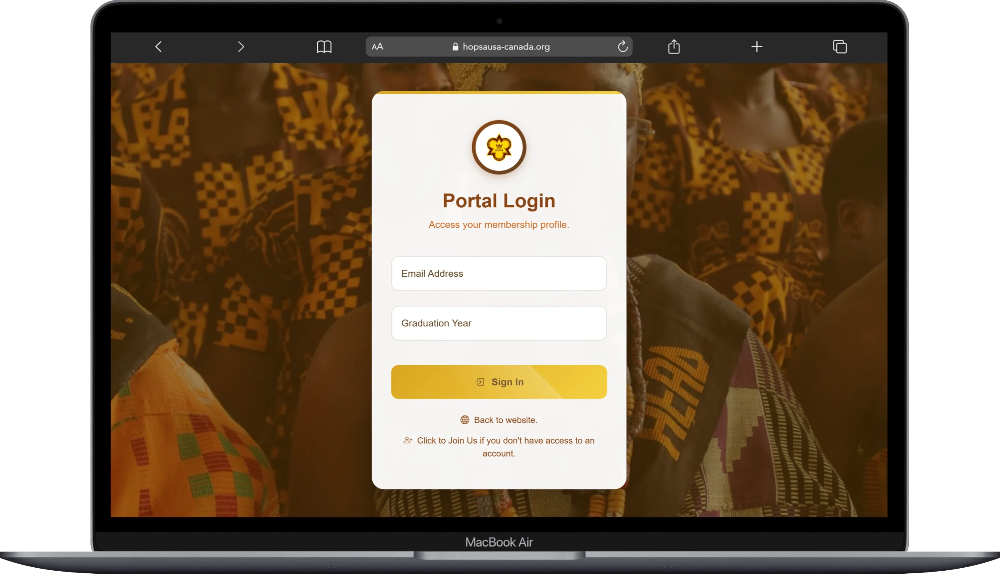

Alfred
Developer
& Co-Founder
I engineer high-performance digital systems that secure customer data, streamline business operations, and scale with your growth.
Explore OutcomesBoakye
Development Principles
High Standards.
Disciplined Process.
Business Growth.
Planning & Business Alignment
Before writing code, we map database models and user journeys directly to your business goals. Getting the architecture right upfront prevents future development bottlenecks, lowering your engineering costs.
Maintainable Codebases
Writing clean, modular code prevents technical debt. This ensures your system is easy to support, update, and hand over, keeping your future operational costs low.
Conversion-Focused Design
Fluid layouts load instantly and adapt to mobile devices flawlessly. Elegant interfaces build consumer trust and directly boost your customer conversion rates.
Revenue & Data Protection
Slow websites lose customers, and data breaches ruin reputation. I optimize systems to run lightning-fast while enforcing strict security controls to protect your transaction flows and customer databases.
Scale-Ready Infrastructure
Designing platforms that support heavy web traffic surges without crashing, keeping your storefront online and operational when it matters most.
Zero-Downtime Deployment
Automated pipelines push live updates instantly. This guarantees you roll out new business features without interrupting active customer sessions.
Case Studies
Selected projects built for impact.

CEANA Website Redesign
I redesigned an old, outdated website with a clean, modern, and engaging user interface.

Security Pentesting Lab
I built my own homelab, hosted a website and media streaming service on it, monitored system health, and performed security checks including simulated denial-of-service and SSH brute-force defense on an Ubuntu server.

Erudite Academy Portal
I built an online training and learning platform where learners acquire new skills and earn certificates. Despite a large user base, I scaled the platform to ensure high performance with no lag.

Skills Bridge Hub
I built a fully responsive, secure, and high-performance website for Skills Bridge.

POS & Inventory Engine
I built a point-of-sale system for businesses to manage their inventory and sales transactions.

TechHub Employee Portal
I had the opportunity to build the employee system for TechHub, one of the largest companies in Ghana.

EWAGA Hub
I designed and deployed the official web portal for the Ewe Association of Georgia, Inc., implementing membership management, events coordination, and diaspora community support interfaces.

GESA Student Platform
I built the official Geomatic Engineering Students Association (GESA) student portal at UMaT, facilitating student logins and secure access to academic resources.

GHASS-G Administrative Portal
I developed the primary web platform for the Global Health and Safety Group, establishing training course catalog directories and professional certification portals.
GHSIC Secured Portal
I engineered the secure digital portal for the Ghana Students Internship Council, connecting students with premier internship placements and career training resources.

HOPSA USA-Canada Website
I designed the secure management portal for the Holy Child Past Students Association (HOPSA) USA-Canada branch, supporting alumni communication and member networking.
Academic & Career History
My Professional Timeline
Erudite Africa Network
Co-Founder & Technical Director
Co-founded and scaled an online training and learning platform, ensuring high performance, security, and uptime under high user traffic. Driven by the mission of providing accessible skills training and certification programs across Africa.
Cyber Security Studies & Freelancing
University Student / Software Engineer
Deepening technical expertise across custom application development, backend system engineering, database management, security vulnerability auditing, infrastructure automation, and secure hosting environments.
IT Science Education (OSHTS)
Obuasi Senior High Technical School
Studied foundation computer sciences and information architectures. Mastered system logical planning, database design, and responsive web platform architectures, culminating in delivering the official web portal for the institution.
Strategy & Capabilities
Core Competence
Assess
Audit existing business systems, mapping out current performance bottlenecks and vulnerabilities.
Architect
Design a modular, highly secure system framework aligned with your scale goals.
Implement
Build the core platform with reliable software patterns, custom workflows, and clean design elements.
Harden & Release
Run simulated system stresses, speed audits, and deploy the application through automated release pipelines.
FAQ
Common Queries
Contact
Let’s secure and build.
If you have a project that needs secure engineering, database design, or frontend optimization, skip the forms and reach out directly.